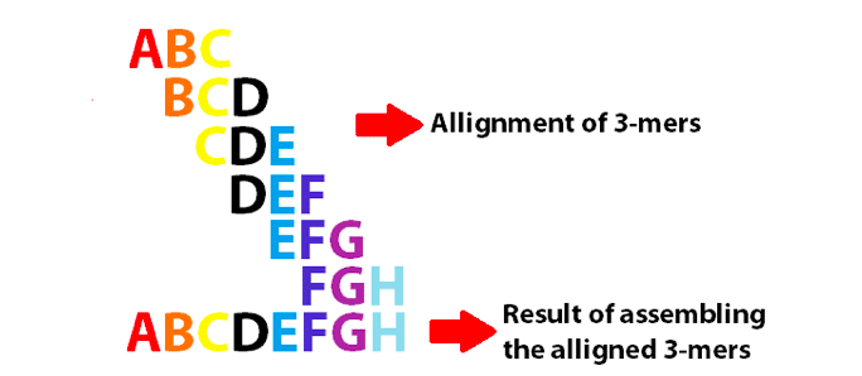
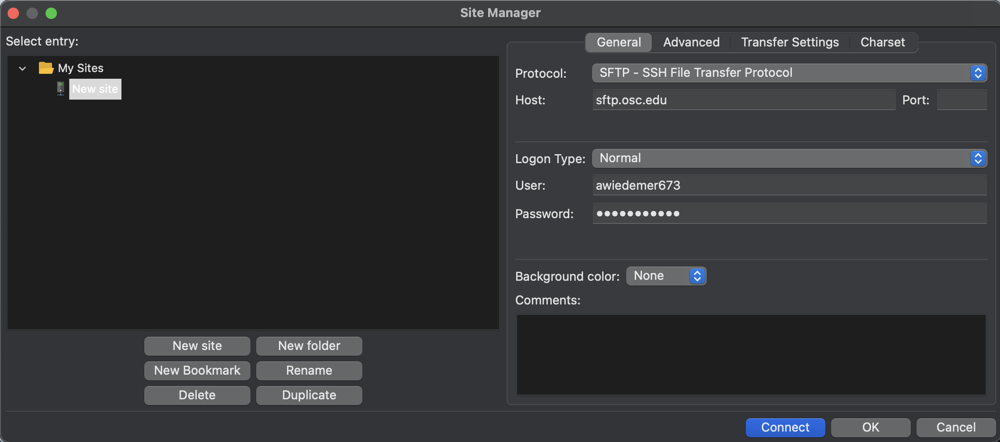
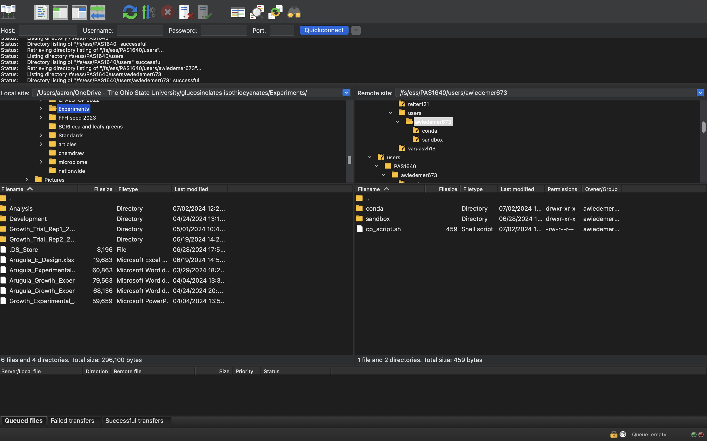

Using Software in OSC
Meeting objectives
- Learn how programs at OSC work
- Available programs
- Unavailable programs
- Conda enviroments
- Get introduced to how to transfer data
- SFTP
- Globus
Analysis of omics data sets, especially in genomics and transcriptomics, often involves using a sequence of specialized software (e.g., within our group, use MSconvert -> Mzmine -> GNPS, R)
Many analysis pipelines involve software accessible through the Unix shell (i.e., FastQC) and it is my goal to introduce you all to how utilize software in the Unix shell at OSC.
Obtaining and utilizing software at the OSC depends on weather or not the programs are already available through the OSC or are not and need imported. For the case of unavailable software, I’ll be showing how to use the Conda software management system.
Knowing how to use software is great, but useless if we don’t know how to import our data to be analyzed, so I’ll also be going over a little of that today with SFTP and Globus .
1. Available software at OSC
The OSC comes “pre-packed” with some common system wide programs that only need to be loaded before use.
OSC software is managed with the Lmod system which allows us access to a lot of different downloaded programs, but requires that we have to explicitly load a program before use. The upside of this is that we can have many different versions of the same software available to us at once.
If you’re coming from an R background, I like to think of this like requiring packages to be loaded in a script before we use them, even though we already have them downloaded.
To load, unload, and search for available software, we use the module set of commands
1.1 Checking available programs
There are a few ways to do this!
1. Just look it up [here](https://www.osc.edu/resources/available_software/software_list)
2. Within the shell, we can see the available software with
- __module spider__ : lists all installed modules
- __module avail__ : lists all software that are currently available to be directly loaded given the current working environmentExample - Lets look at the available versions of git
first using module spider
module spider git------------------------------------------------------------------------------------------- git: ------------------------------------------------------------------------------------------- Versions: git/2.18.0 git/2.27.1 git/2.39.0 ------------------------------------------------------------------------------------------- For detailed information about a specific "git" module (including how to load the modules) use the module's full name. For example: $ module spider git/2.39.0 -------------------------------------------------------------------------------------------
next using module avail
module avail git--------------------------------------- Global Aliases ---------------------------------------- intelmpi/2021.5.0 -> intelmpi/2021.5 oneapi/2023.2.0 -> intel-oneapi/2023.2.0 ------------------------------------ /apps/lmodfiles/Core ------------------------------------- git/2.18.0 (L,D) git/2.27.1 git/2.39.0 Where: L: Module is loaded D: Default Module Use "module spider" to find all possible modules. Use "module keyword key1 key2 ..." to search for all possible modules matching any of the "keys".
From this we can see a few key pieces of information
1. Different versions of software are available and listed through OSC
2. In this case, all of the installed modules match the available modules
3. Only `module avail` gives information on what is the default program loaded (indicated with a `D`) and if it is already loaded (indicated with an `L`)There also is actually a bunch of software already loaded by default in the OSC! At any point we can see what software is loaded by using module list
module listCurrently Loaded Modules: 1) xalt/latest 4) mvapich2/2.3.3 7) git/2.18.0 2) gcc-compatibility/8.4.0 5) modules/sp2020 8) app_code_server/4.8.3 3) intel/19.0.5 6) project/ondemand
1.2 Loading software
What about software that is available, but is not already loaded?
Lets check out the module miniconda which is a useful program used to install outside programs that we’ll use later
module avail miniconda--------------------------------------- Global Aliases ----------------------------------------
intelmpi/2021.5.0 -> intelmpi/2021.5 oneapi/2023.2.0 -> intel-oneapi/2023.2.0
------------------------------------ /apps/lmodfiles/Core -------------------------------------
miniconda3/4.10.3-py37 (D) miniconda3/4.12.0-py39 miniconda3/24.1.2-py310
miniconda3/4.12.0-py38 miniconda3/23.3.1-py310
Where:
D: Default Module
Use "module spider" to find all possible modules.
Use "module keyword key1 key2 ..." to search for all possible modules matching any of the
"keys".We can see that the default version is miniconda3/4.10.3-py37 (D), but it is not currently loaded
loading modules with module load
To load available modules, we use module load
# Load a module
module load miniconda3 # loads the default versionYou can also specify which version of a program you load
module load miniconda3/4.10.3-py37 # loads a specific version - usually better to do for replicabilityunloading modules
Occasionally, it may be useful to unload a module, such as when you have conflicting versions
- We can unload a specific module with
module unload <module name> - To unload all modules use
module purge
If you’re ever running scripts, make sure the modules you want to use are loaded at the top of the script! (very similar to making sure your libraries are loaded in R)
2 How to use software that is not already available in OSC
Using the module commands to load software is limited to the software already available in OSC, but there may be programs outside of OSC you desire to use
According to Jelmer here are two of the most useful l ways we can use external software - Containers, which are self-contained software environments that include operating systems, akin to mini virtual machines. Docker containers are most well-known, but OSC uses Apptainer (formerly known as Singularity). - Conda, which creates software enviroments similar to the Lmod system
In addition to being able to use external programs, using these methods also allows us to bypass any issues with admin privileges and other software dependencies you may encounter
I use conda the most, so we’ll be going over how to use that here
2.1 Conda Intro
With conda, we can create what are called environments in which we can install one or more software packages
As long as a program is available in one of the online Conda repositories, which most bioinformatics programs are, it is fairly straightforward to download and run (similar to CRAN in R)
A conda environment is essentially a dir that contains an executable program. I like to think of it essentially as an application.
I generally recommend keeping your conda environments together
Here are some I have
ls users/awiedemer673/conda/conda_program_list.md mzmine proteowizard kraken2_2.1.3Each environment is one separate program, similar to what we saw with the Lmod earlier (or think of it as my installed packages)
2.2 Activating a Conda environment
While the term load is used for the Lmod system, conda environments use the term activate - it really means the same thing, that we make a program ready to use
Similar to the module family, when using the conda environment we use the conda family of commands which includes
conda activate: activates a conda environmentconda deactivate: deactivates a conda environmentconda create: creates a conda environment if one does not already existconda install: intalls a conda environmentconda update: updates a conda environment
e.g.,
conda activate ls users/awiedemer673/conda/proteowizardUnlike the Lmod system, the conda can only have one active environment at a time. If you activate another conda environment, the previous one will automatically be deactivated
This may seem like a hassle, but forces you to get in the habit of having a different script for every program you may use in your analysis pipeline
We activate conda environments using the miniconda3 module we saw earlier, which is not pre-loaded into the OSC, so whenever we use a conda environment remember to module load miniconda3 !
# if you are running a conda enviroment, it should look like this at some point
module load miniconda3
conda activate ./<conda environment>2.3 Creating your own conda enviroments
One-time setup
Before we can use conda to download anything, we need to do a little bit of setup - but don’t worry, this only needs to be done once.
Essentially we need to set up what repositories we will have access to by using conda config
conda config --add channels defaults #added first -> lowest priority
conda config --add channels bioconda
conda config --add channels conda-forge #added last -> highest priorityLets check to see if we got the right repos
conda config --get channelsIt should return the following
--add channels 'defaults' # lowest priority
--add channels 'bioconda'
--add channels 'conda-forge' # highest priority2.4 Conda Example - kraken2
Lets practice downloading a conda envrironment using kraken2 as an example
kraken2 is a piece of bioinformatics software that assigns taxonomy of metagenomic data using a k-mers based approach

I’m not going to get super into the specifics of how it works, but to get kraken2 to work you need to first set up a database to compare your data to, and then run the kraken2 software to see if there are any matches to the database.
If we look in the module list for kraken2, we can see its not there, requiring us to use the conda environment to use it
module avail kraken2--------------------------------------- Global Aliases ----------------------------------------
intelmpi/2021.5.0 -> intelmpi/2021.5 oneapi/2023.2.0 -> intel-oneapi/2023.2.0
No modules found!
Use "module spider" to find all possible modules.
Use "module keyword key1 key2 ..." to search for all possible modules matching any of the
"keys".Lets make a folder to store our conda enviroments
Before we download anything, lets first make a dir to store your conda environments
Generally, there are two good options for where to keep your conda environments
Have one large dir containing all of the conda environments you use in all of your projects (less hassle, but less reproducible if you want someone else to see what programs you use and how you got them)
Have one conda environment containing dir per project with all of the relevant environments for that project (more work, but more reproducible)
You choose what you want to do - I have one big dir with all of my envrioments alongside a markdown document describing the code I used to download each
Setup code
# get to your user dir
cd ./$USER/
# make a folder called conda
mkdir ./conda/Installing kraken2
Now lets install kraken2
cd ./conda #gets me to the place I want to install stuff inOf course load miniconda3
module load miniconda3/24.1.2-py310lets get kraken
conda create -y -p ./kraken2 -c bioconda kraken2Breaking down that code
- `conda` is the family of commands we are using
- `create` is the sub-command that is used to create an environment
- The `-n` argument specifies the name you are going to give this environment. Here I have said `proteowizard` but should also likely have included what version it is in the name
- `-c` says what repository to install the environment from, in this case bioconda
- The end doesn't have an argument, but it’s the name of the program we want to installBy default, conda will install the latest available version of the program
To specify a version, use the equal sign after the program name
conda create -y -p ./kraken2_2.1.3 -c bioconda kraken2=2.1.3This is probably the better way to do it as you may run into trouble if you download a newer version of a program to the same name
Let’s try it out!!
conda activate ./kraken2_2.1.3Also - notice how the command line has changed a little - you should notice you have something like this on your screen specifying that you have an activated conda environment
/fs/ess/PAS1640/users/awiedemer673/conda/kraken2_2.1.3)Now we can use the kraken2 commands like any other - lets learn a little about it
kraken2 --helpUsage: kraken2 [options] <filename(s)>
Options:
--db NAME Name for Kraken 2 DB
(default: none)
--threads NUM Number of threads (default: 1)
--quick Quick operation (use first hit or hits)
--unclassified-out FILENAME
Print unclassified sequences to filename
--classified-out FILENAME
Print classified sequences to filename
--output FILENAME Print output to filename (default: stdout); "-" will
suppress normal output
--confidence FLOAT Confidence score threshold (default: 0.0); must be
in [0, 1].
--minimum-base-quality NUM
Minimum base quality used in classification (def: 0,
only effective with FASTQ input).
--report FILENAME Print a report with aggregrate counts/clade to file
--use-mpa-style With --report, format report output like Kraken 1's
kraken-mpa-report
--report-zero-counts With --report, report counts for ALL taxa, even if
counts are zero
--report-minimizer-data With --report, report minimizer and distinct minimizer
count information in addition to normal Kraken report
--memory-mapping Avoids loading database into RAM
--paired The filenames provided have paired-end reads
--use-names Print scientific names instead of just taxids
--gzip-compressed Input files are compressed with gzip
--bzip2-compressed Input files are compressed with bzip2
--minimum-hit-groups NUM
Minimum number of hit groups (overlapping k-mers
sharing the same minimizer) needed to make a call
(default: 2)
--help Print this message
--version Print version information
If none of the *-compressed flags are specified, and the filename provided
is a regular file, automatic format detection is attempted.
So kraken2 has a lot of options, but we can see that its activated because it allows us to run the --help argument
Exiting a conda enviroment with conda deactivate
To deactivate a conda enviroment, all we need to use is conda deactivate - that’s literally it
if you every want to check if a program is available through bioconda, check the website
- https://bioconda.github.io/index.html : the bioconda website, search for available programs
It also has programs such as proteowizard and MZmine
3 Moving data - file transfer
Knowing how to get and use software is great, but we need to know how to transfer our data if we are to use any software.
Today I want to mention two useful ways to transfer your data to your OSC account:
- SFTP (secure file transfer protocol)
- Globus (which DQ has a wonderful protocol for in Cooperstone Lab/Data processing PC/Globus/ )
3.1 SFTP
SFTP stands for secure file transfer protocol and is a general way to transfer files (if you’ve ever transferred data from MZmine to GNPS, you have used FTP which is similar). There are many GUI-based SFTP applications you can use, here I’ll show how to get FIleZilla as it works on most operating systems (and is the one Jelmer showed me how to use).
Steps to get and use FIleZilla
- Go to the FileZilla download page and download the program toy your local system
- To connect to OSC find the sit manager (file > site manager)
- Click my sites
- In General choose the following
- Protocol: SFTP - SSH File Transfer Protocol
- Host: sftp.osc.edu
- Port - leave blank
- Logon Type: Normal
- User: your OSC user name
- Password: Your OSC password

Transferring files is now just drag and dropping it over to where you want

Remember how the filing system at OSC works! To get to the project go to /fs/ess/PAS1640 in the OSC side
3.2 Globus
I’m not going to detail how to use Globus here as Daniel Quiroz has made a great presentation on how to link globus specifically to the DPPC. His presentation can be found in Cooperstone Lab/Data processing PC/Globus/ Set up does require booking some time with the DPPC though.
I will mention that the main advantage of Globus is that it is specifically useful for transferring large files and automatically updating them.